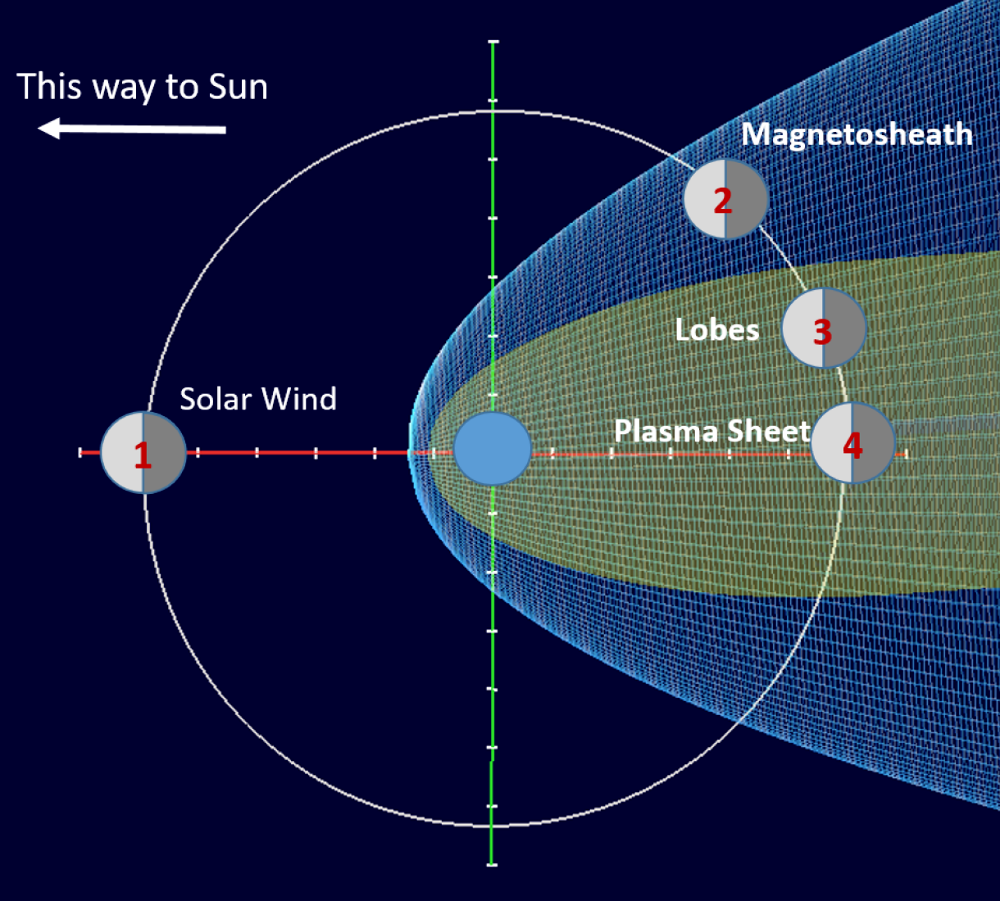

Research Overview
Focus:
Characterization of lunar plasma environments
Methods:
Satellite data analysis, spacecraft charging modeling
Applications:
Artemis mission planning, spacecraft design, EVA safety
Key Areas:
Solar wind, magnetotail, surface charging effects


Research Objectives
- Define the plasma environment for NASA's Artemis lunar exploration program
- Characterize the various plasma regions in cis-lunar space
- Analyze spacecraft charging risks in different lunar environments
- Support hardware design and mission planning for safe operations
Lunar Plasma Environment Regions
- Solar Wind: Low-density charged particles flowing from the Sun that directly impact the lunar surface (dominant for ~75% of lunar orbit)
- Magnetosheath: Region of shocked solar wind plasma between Earth's bow shock and magnetopause
- Magnetotail: Extended region of Earth's magnetic field on the night side, containing plasma sheet and lobes
- Lunar Wake: Plasma depletion region formed on the night side of the Moon in the solar wind
Figure: The regions of cis-lunar space used to determine the lunar plasma environment definition.
Surface Plasma Environment
- Differential charging between sunlit and shadowed regions
- Photoelectron generation on dayside surfaces
- Complex wake structures behind topographic features
- Tribocharging concerns for moving vehicles on the lunar surface
- Extreme charging events during solar energetic particle events
Data Sources and Methods
- ARTEMIS Mission: Twin spacecraft providing electromagnetic field and plasma data in lunar orbit
- Lunar Prospector: Surface potential observations through electron beams
- Modeling Tools: NASA/Air Force Spacecraft Charging Analyzer (Nascap-2k) and Spacecraft Plasma Interaction System (SPIS)
- Space Physics Data: Analysis of solar wind, magnetosheath, and magnetotail characteristics

The regions of cis-lunar space including the solar wind, magnetosheath, and Earth's magnetotail.